Железные дороги
Главный «цех» фронта: перевозки войск, техники, боеприпасов и эвакуационных грузов. Поезда шли под бомбёжками, а бригады работали сутками, восстанавливая разбитые пути.
Исторический проект · Российский университет транспорта
История транспортного образования и транспорта в годы Великой Отечественной войны
«Здесь живет история. Сохраним память вместе!»
О проекте
В 2020 г. наше государство и весь мир отмечали 75 лет со дня окончания Великой Отечественной и Второй Мировой войны. 75 лет Великой Победы!
Мы, студенты Российского университета транспорта, хотим сохранить историческую память о Великой Отечественной войне и внести свой посильный вклад в сохранение и популяризацию истории этой войны.
В исторических фотозаметках мы будем рассказывать об этапах войны, о битвах и подвигах, о роли транспорта в достижении Победы над немецко-фашистскими захватчиками, о повседневном труде железнодорожников и работников транспортной сферы в годы войны, внесших свой вклад в общую Победу!
Научный руководитель проекта — к.и.н. Анастасия Танцевова.
Истина заключается в том, что, несмотря на тяжелейшие испытания, мы победили
А. Б. Чаковский
Хроника
Ключевые вехи войны — и транспорт, который работал на Победу на каждом её этапе.
22 июня 1941
Нападение Германии на СССР. Железные дороги переходят на военное положение: первоочередные воинские перевозки, мобилизация транспортников, работа под бомбёжками.
24 июня 1941
Создан Совет по эвакуации при СНК СССР. Железнодорожный транспорт становится главной артерией перебазирования промышленности, населения и культурных ценностей на восток страны.
Июль — декабрь 1941
В тыл перебазированы свыше 2 600 промышленных предприятий и миллионы людей. Для перевозок формируются паровозные колонны особого резерва НКПС, работающие как единые мобильные соединения.
12 сентября 1941
Начала работу транспортная магистраль через Ладожское озеро — единственная связь блокированного Ленинграда со страной: водным путём, а с 22 ноября 1941 года — по ледовой трассе.
1942
Сталинградская битва. От бесперебойности подвоза боеприпасов, горючего и продовольствия зависит исход сражения: колонны особого резерва НКПС работают в волжских степях под ударами авиации.
7 февраля 1943
После прорыва блокады всего за 17 суток построена 33-километровая линия Шлиссельбург — Поляны. На Финляндский вокзал приходит первый поезд с Большой земли.
1943—1944
На освобождённых территориях железнодорожные войска и спецформирования НКПС восстанавливают путь, мосты и связь. Вслед за наступающей армией идёт «второй фронт» транспортников.
1945
Транспорт обеспечивает наступательные операции завершающего года войны. 9 мая 1945 года — Победа. За ней — труд сотен тысяч железнодорожников, речников, водителей, связистов и строителей.
Транспорт и Победа
О чём мы рассказываем в проекте: о людях и дорогах, на которых держался фронт и тыл.
Главный «цех» фронта: перевозки войск, техники, боеприпасов и эвакуационных грузов. Поезда шли под бомбёжками, а бригады работали сутками, восстанавливая разбитые пути.
Ладожская магистраль блокадного Ленинграда: навигация по воде, ледовая военно-автомобильная дорога, авиация и понтонные переправы — жизнь города зависела от каждой тонны груза.
Линия Шлиссельбург — Поляны, построенная за 17 суток после прорыва блокады. Первый поезд с Большой земли пришёл в Ленинград 7 февраля 1943 года.
Мобильные паровозные колонны НКПС, сформированные из локомотивов и бригад: они перебрасывались туда, где решалась судьба операции, и работали автономно в прифронтовой полосе.
«Крепости на колёсах» — огневая поддержка обороны, прикрытие железнодорожных станций и переправ. Экипажи бронепоездов формировались в том числе из железнодорожников.
Железнодорожные войска и спецформирования НКПС возвращали к жизни путь, мосты, депо и связь на освобождённых территориях — часто в непосредственной близости от боя.
Транспортные вузы и техникумы в годы войны: эвакуация, учеба в тяжелейших условиях, студенческие строительные и восстановительные отряды, преподаватели и выпускники на фронте и в тылу.
Машинисты, диспетчеры, путейцы, стрелочницы, речники, шофёры, связисты. Их повседневный труд в тылу и на передовой — то, из чего складывалась Победа.
Исторические фотозаметки
Записи, опубликованные в сообществе проекта «Рельсы Победы» во ВКонтакте: сентябрь — начало октября 2026 года. Тексты и фотографии — из материалов сообщества, каждая карточка ведёт на оригинальный пост.
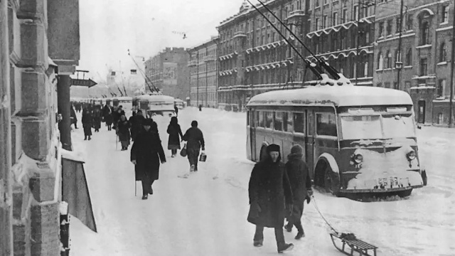
8 сентября8 сентября 1941 г. — 85 лет назад началась блокада Ленинграда. В блокадном Ленинграде единственным видом городского транспорта, который практически непрерывно работал на протяжении всей осады, был трамвай. Трамвайное движение было прекращено зимой 1941–1942 гг., но уже 8 марта 1942 г. пошли первые трамваи — грузовые. А уже 15 апреля начались пассажирские перевозки. Трамвай стал символом жизни и стойкости города.
Источник: сообщество «Рельсы Победы» во ВКонтакте, запись от 8 сентября 2026 г.
Открыть запись во ВКонтакте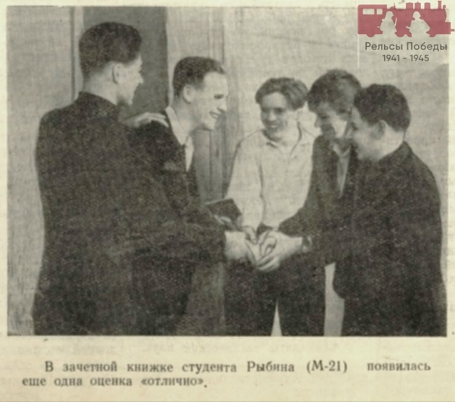
1 октябряКадр из фотолетописи университета, опубликованный сообществом.
Запись во ВКонтакте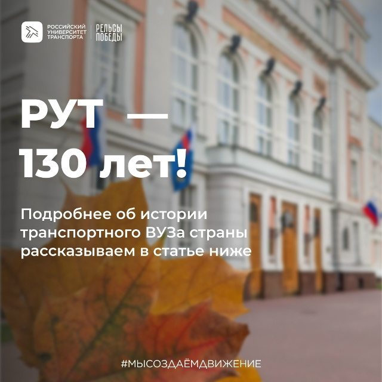
28 сентября130 лет истории, людей и событий, которые сформировали наш университет таким, каким мы знаем его сегодня. А с чего всё начиналось? Читайте в статье сообщества.
К записи приложена статья: «Российскому университету транспорта — 130 лет».
Читать статью во ВКонтакте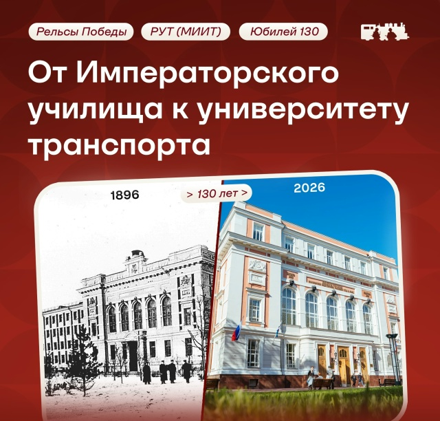
26 сентябряСерия юбилейных фотографий, 1 из 6. Место съёмки, указанное в записи, — Дворец культуры РУТ, Новосущёвский переулок, 6, стр. 1.
Запись во ВКонтакте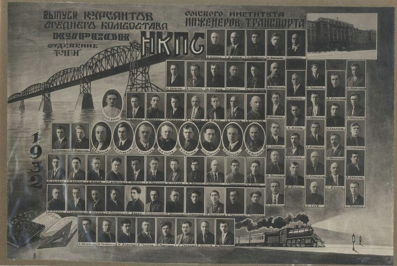
22 сентябряНародный комиссариат путей сообщения готовил кадры для железных дорог страны — из этих специалистов выросли командиры военного времени.
Источник: сообщество «Рельсы Победы» во ВКонтакте.
Запись во ВКонтакте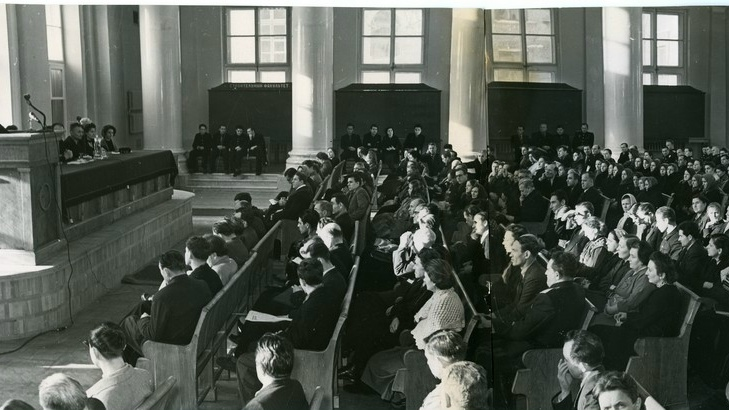
18 сентябряСобрание в Московском институте инженеров ж/д транспорта, посвящённое выдвижению кандидатов в депутаты Верховного Совета СССР. 1958 г.
Фото с сайта Государственного каталога Музейного фонда РФ.
Запись во ВКонтакте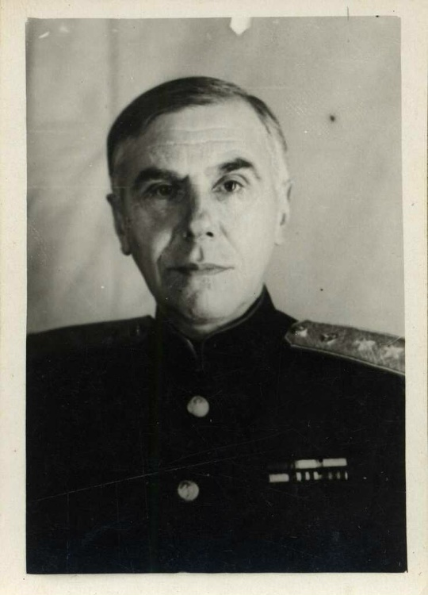
16 сентябряИнженер путей сообщения, учёный в области проектирования и строительства железнодорожных узлов, профессор МИИТа, художник, знакомый К. Э. Циолковского.
Фото: Государственный музей истории космонавтики имени К. Э. Циолковского, Госкаталог РФ.
Запись во ВКонтакте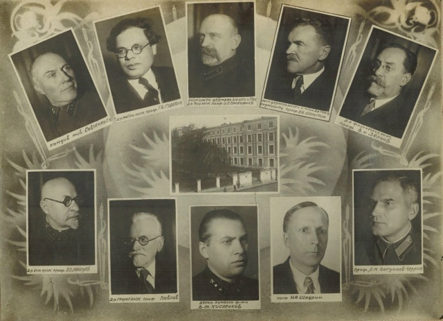
15 сентября«Московский институт инженеров ж. д. транспорта им. И. В. Сталина. Выпуск 1940 г.» — поколение, которому уже через год предстояло уйти на фронт и в тыл.
Источник: сообщество «Рельсы Победы» во ВКонтакте.
Запись во ВКонтакте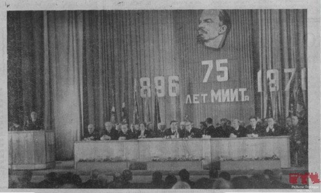
15 сентябряВ рамках рубрики #Навстречуюбилею130 — юбилейные фотографии из жизни головного вуза транспортной отрасли. В 1971 г. вуз отмечал своё 75-летие.
Фото из газеты «Инженер транспорта», осень 1971 г.
Запись во ВКонтакте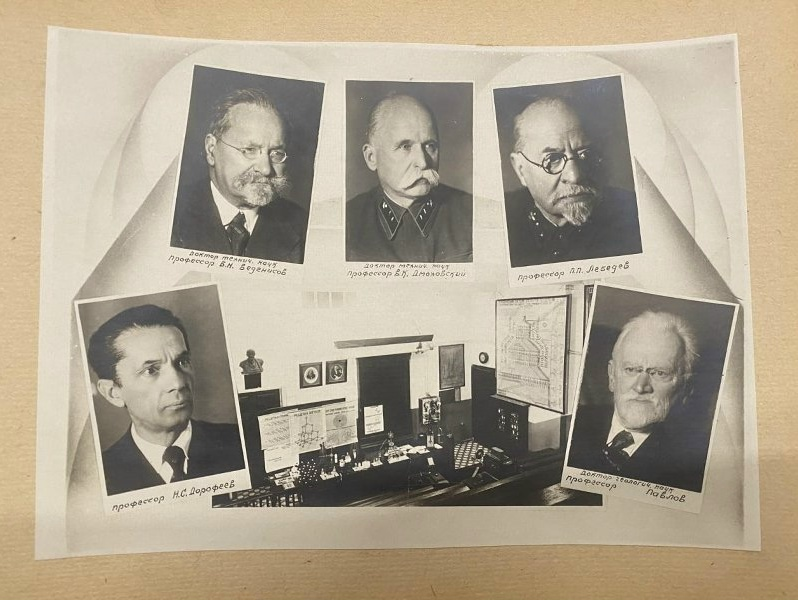
9 сентябряЛист из альбома фотографий студенческо-преподавательского состава МИИТ, факультета инженерных сооружений, выпуск 1939 г. Портреты: профессор Б. Н. Веденисов, профессор В. К. Дмоховский, профессор П. П. Лебедев, профессор Н. С. Дорофеев, профессор Павлов.
Фото: Госкаталог РФ.
Запись во ВКонтакте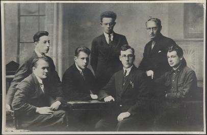
9 сентябряБлаговещенский В. П. в кругу своих сокурсников Московского института инженеров транспорта. 1920-е гг.
Запись во ВКонтакте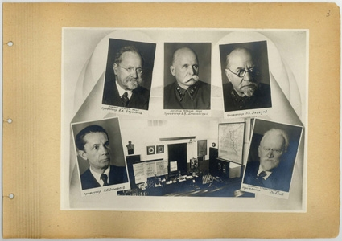
3 сентябряПреподавательский состав Московского института инженеров ж-д транспорта имени И. В. Сталина (МИИТ). 1939 г.
Запись во ВКонтакте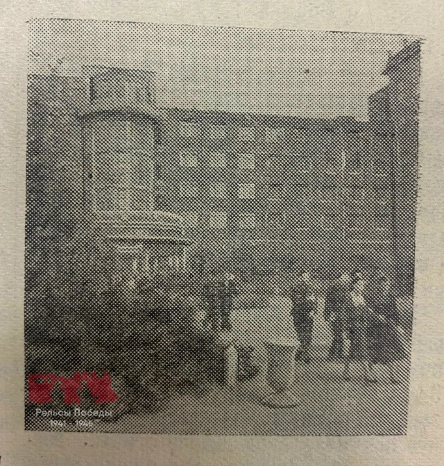
1 сентябряДобро пожаловать в главный транспортный университет страны — Российский университет транспорта! На фото второй корпус МИИТа 1950-х гг. и 8-й корпус в 1930 г.
Запись во ВКонтактеВсего в сообществе «Рельсы Победы» — 1 169 записей; проект ведётся с 2020 года. Полная лента, обсуждения и новые публикации: vk.ru/historyoftransportinrussia.
Сообщество проекта
Сообщество «Рельсы Победы» во ВКонтакте — основная площадка проекта: здесь выходят исторические фотозаметки, архивные находки и фотографии из истории транспортного образования и транспорта. Подписывайтесь, чтобы следить за новыми материалами, делиться семейными историями и задавать вопросы.
Адрес сообщества: vk.ru/historyoftransportinrussia
Основатель проекта
Основатель проекта, научный руководитель
кандидат исторических наук (к.и.н.)
Анастасия Владимировна Танцевова — основатель и научный руководитель проекта «Рельсы Победы», научный руководитель студенческой исследовательской работы, посвящённой истории транспорта и транспортного образования в годы Великой Отечественной войны.
Под её руководством студенты Российского университета транспорта собирают и готовят исторические фотозаметки, работают с архивными материалами и публикуют результаты исследований.
Научный руководитель проекта — к.и.н. Анастасия Танцевова.
Присоединиться к проекту
Если у вас есть семейные фотографии, документы, воспоминания или исследовательские материалы о транспорте и транспортном образовании в годы Великой Отечественной войны — проект открыт для вас.
Источники и литература
Проект опирается на открытые архивные и музейные источники, научные публикации и семейные архивы участников.
Тексты фотозаметок носят просветительский характер. Даты и цифры при публикации уточняются по первоисточникам; если вы заметили неточность — сообщите участникам проекта.